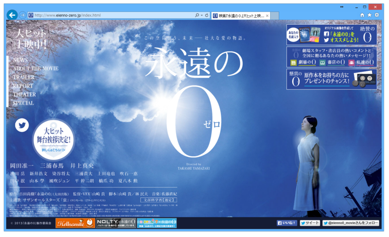
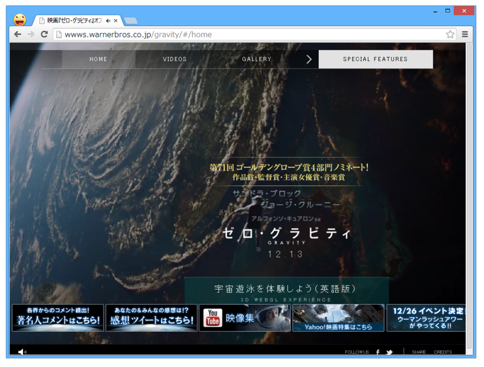

映画: 永遠のゼロ・グラビティ
公開日：
@subsfn 氏と Y 氏と一緒に、今年初めて映画を観に行った。しかも、2本も！*1 ブログタイトルは彼らの考案。
永遠の0

一応先に断わっておくけど、原作はマンガのほうしか読んだことがない（これは結構面白かったヨ！）。
")
- 作者: 画・須本壮一・作・百田 尚樹
- 出版社/メーカー: 双葉社
- 発売日: 2010/07/28
- メディア: コミック
- クリック: 1回
- この商品を含むブログ (1件) を見る
劇場版にはあまり期待はしていなかったけれど、空母・赤城の雄姿がみたくて、この作品は絶対に劇場でみようと思った。割りと最初のほうで派手に、しかしあっさりと沈んでしまったのが残念だったけれど、舷側から煙を吐きながら大海原を走る赤城はなかなかの迫力で大いに満足させられた。
ただ、脚本の改変には辟易。
たとえば、「カミカゼはテロだ」と主張するのはマンガ版だとメディアの記者だった。それが劇場版では主人公の合コン仲間の発言にすり替えられている。「カミカゼはテロではないのか？」という問いに対する答えを探し出すのはこの作品の大きなテーマの一つであるのに、その問いを出すのが正義感面した（しかしながら、多少の説得力を伴う）メディア記者から、（今の老年世代が思い描くような典型的）今風の軽薄な若者へとすり替えられていることには大きな違和感を感じた。あまり穿った見方はしたくはないが、朝日新聞や日経新聞、中日新聞、西日本新聞のような新聞社が協賛に入っていたからだろうか。だとしたら、なんとくだらないことだと思う。小説版ではどうだったのだろうか。
万人向けのエンターテイメントとしては、多少恋愛もの仕立てになるのも仕方がない。2時間半という時間に収める以上、エピソードがいくつも端折られてしまうのもしょうがない。けれど、「航空兵は志願兵である（なのになぜ主人公は逃げ回っていたのか？）」みたいなわりと大事なポイントが結構抜け落ちていたのが残念。モールス信号で戦果報告をさせるエピソードも入れてほしかった。となれば、連続ドラマの体裁にして掘り下げた方がよかったようにも思う。
とはいえ、最後の景山と大石賢一郎がクロスオーバーする演出なんかは結構気に入った。あれはいい改変だったんじゃない？
ゼロ・グラビティ

お口直しに、午後からはあまり内容のなさそうな1本をチョイス。@subsfn が 3D 版をとっといてくれたのだけど、これが大正解だった。宇宙ステーションが爆散してデブリが飛び散るシーンなんか、自分に当たるんじゃないかって思うぐらい迫力ある。ケスラーシンドロームこええ！！
まぁ、でも、正直シナリオはデキスギ。コワルスキーさんがカッコよすぎて惚れそうやでぇ。あと、サンドラ・ブロックのお尻がエロいなという点で Y 氏と意見が一致した。
*1:Y 氏は午後の『ゼログラビティ』のみ